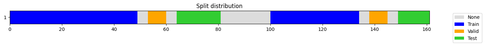

a = np.arange(10)
b = np.arange(10, 20)
test_eq(check_overlap(a, b), False)
a = np.arange(10)
b = np.arange(9, 20)
test_eq(check_overlap(a, b), [9])
a = np.arange(10)
b = np.arange(10, 20)
c = np.arange(20, 30)
test_eq(check_overlap(a, b, c), False)
a = np.arange(10)
b = np.arange(10, 20)
c = np.arange(10, 30)
test_eq(check_overlap(a, b, c), ([], [], [10, 11, 12, 13, 14, 15, 16, 17, 18, 19]))Spliting data
Functions required to perform cross-validation and transform unique time series sequence into multiple samples ready to be used by a time series model.
RandomSplitter
RandomSplitter (valid_pct=0.2, seed=None)
Create function that splits items between train/val with valid_pct randomly.
balance_idx
balance_idx (o, shuffle=False, strategy='oversample', random_state=None, verbose=False)
leakage_finder
leakage_finder (*splits, verbose=True)
You can pass splits as a tuple, or train, valid, …
check_splits_overlap
check_splits_overlap (splits)
check_overlap
check_overlap (a, b, c=None)
Checks if there’s overlap between array-like objects
y = np.concatenate([[i] * np.random.randint(10, 100) for i in range(5)])
train_split = np.random.choice(len(y), int(len(y) * .8), False)
c, v = np.unique(y[train_split], return_counts=True)
print(f"{'imbalanced:':25} {c} {v}")
oversampled_train_split = train_split[balance_idx(y[train_split], strategy="oversample")]
osc, osv = np.unique(y[oversampled_train_split], return_counts=True)
print(f"{'balanced (oversample):':25} {osc} {osv}")
test_eq(osv, [max(v)] * len(v))
undersampled_train_split = train_split[balance_idx(y[train_split], strategy="undersample")]
usc, usv = np.unique(y[undersampled_train_split], return_counts=True)
print(f"{'balanced (undersample):':25} {usc} {usv}")
test_eq(usv, [min(v)] * len(v))imbalanced: [0 1 2 3 4] [24 43 64 41 8]
balanced (oversample): [0 1 2 3 4] [64 64 64 64 64]
balanced (undersample): [0 1 2 3 4] [8 8 8 8 8]l = L(list(concat(np.zeros(5), np.ones(10)).astype(int)))
balanced_idx = balance_idx(l)
test_eq(np.mean(l[balanced_idx]), 0.5)
test_eq(isinstance(balanced_idx, L), True)
l = list(concat(np.zeros(5), np.ones(10)).astype(int))
balanced_idx = balance_idx(l)
test_eq(np.mean(L(l)[balanced_idx]), 0.5)
test_eq(isinstance(balanced_idx, L), True)
a = concat(np.zeros(5), np.ones(10)).astype(int)
balanced_idx = balance_idx(a)
test_eq(np.mean(a[balanced_idx]), 0.5)
test_eq(isinstance(balanced_idx, L), True)
t = concat(torch.zeros(5), torch.ones(10))
balanced_idx = balance_idx(t, shuffle=True)
test_eq(t[balanced_idx].mean(), 0.5)
test_eq(isinstance(balanced_idx, L), True)a, b = np.arange(100_000), np.arange(100_000, 200_000)soft_labels = True
filter_pseudolabels = .5
balanced_pseudolabels = True
pseudolabels = torch.rand(1000, 3)
pseudolabels = torch.softmax(pseudolabels, -1) if soft_labels else torch.argmax(pseudolabels, -1)
hpl = torch.argmax(pseudolabels, -1) if soft_labels else pseudolabels
if filter_pseudolabels and pseudolabels.ndim > 1:
error = 1 - pseudolabels.max(-1).values
filt_pl_idx = np.arange(len(error))[error < filter_pseudolabels]
filt_pl = pseudolabels[error < filter_pseudolabels]
assert len(filt_pl) > 0, 'no filtered pseudolabels'
filt_hpl = torch.argmax(filt_pl, -1)
else:
filt_pl_idx = np.arange(len(pseudolabels))
filt_pl = filt_hpl = pseudolabelspl_split = filt_pl_idx[balance_idx(filt_hpl)] if balanced_pseudolabels else filt_pl_idx
test_eq(hpl[pl_split].float().mean(), np.mean(np.unique(hpl)))TrainValidTestSplitter
TrainValidTestSplitter (n_splits:int=1, valid_size:Union[float,int]=0.2, test_size:Union[float,int]=0.0, train_only:bool=False, stratify:bool=True, balance:bool=False, strategy:str='oversample', shuffle:bool=True, random_state:Optional[int]=None, verbose:bool=False, **kwargs)
Split items into random train, valid (and test optional) subsets.
plot_splits
plot_splits (splits)
get_splits
get_splits (o, n_splits:int=1, valid_size:float=0.2, test_size:float=0.0, train_only:bool=False, train_size:Union[NoneType,float,int]=None, balance:bool=False, strategy:str='oversample', shuffle:bool=True, stratify:bool=True, check_splits:bool=True, random_state:Optional[int]=None, show_plot:bool=True, verbose:bool=False)
Arguments: o : object to which splits will be applied, usually target. n_splits : number of folds. Must be an int >= 1. valid_size : size of validation set. Only used if n_splits = 1. If n_splits > 1 valid_size = (1. - test_size) / n_splits. test_size : size of test set. Default = 0. train_only : if True valid set == train set. This may be useful for debugging purposes. train_size : size of the train set used. Default = None (the remainder after assigning both valid and test). Useful for to get learning curves with different train sizes or get a small batch to debug a neural net. balance : whether to balance data so that train always contain the same number of items per class. strategy : strategy to balance data (“undersample” or “oversample”). Default = “oversample”. shuffle : whether to shuffle data before splitting into batches. Note that the samples within each split will be shuffle. stratify : whether to create folds preserving the percentage of samples for each class. check_splits : whether to perform leakage and completion checks. random_state : when shuffle is True, random_state affects the ordering of the indices. Pass an int for reproducible output. show_plot : plot the split distribution
n_splits = 5
valid_size = 0.2
test_size = 0.2
train_only = False # set to True for debugging (valid = train)
train_size = 5000
stratify = True
balance = False
shuffle = True
predefined_splits = None
show_plot = True
check_splits = True
random_state = 23
y = np.random.randint(0, 3, 10000) + 100
splits = get_splits(y, n_splits=n_splits, valid_size=valid_size, test_size=test_size, shuffle=shuffle, balance=balance, stratify=stratify,
train_only=train_only, train_size=train_size, check_splits=check_splits, random_state=random_state, show_plot=show_plot, verbose=True)
splits(((#5000) [3490,2428,4475,8317,2802,6834,2954,7671,3383,9554...],
(#1600) [1680,6677,5879,4428,5511,8312,372,5127,7012,3021...],
(#2000) [1263,6498,1602,1838,1073,5304,1210,1037,8789,6175...]),
((#5000) [3442,4237,470,3901,3808,3793,6286,8546,6254,9530...],
(#1600) [9160,5451,3628,143,2054,7225,7124,8057,1405,5089...],
(#2000) [1263,6498,1602,1838,1073,5304,1210,1037,8789,6175...]),
((#5000) [9850,7451,7338,9742,3258,1527,4450,5678,2932,1693...],
(#1600) [6186,5970,376,7848,3786,1663,7193,3647,3277,553...],
(#2000) [1263,6498,1602,1838,1073,5304,1210,1037,8789,6175...]),
((#5000) [1853,7308,7375,3851,1852,3820,2601,3868,8718,7190...],
(#1600) [4182,6419,6265,4837,168,9627,2500,9951,1610,7547...],
(#2000) [1263,6498,1602,1838,1073,5304,1210,1037,8789,6175...]),
((#5000) [7878,6392,453,4817,4676,5738,6482,4033,8114,7337...],
(#1600) [7682,6416,2877,9164,1583,342,2916,4806,8776,2046...],
(#2000) [1263,6498,1602,1838,1073,5304,1210,1037,8789,6175...]))train_size=256
y = np.random.randint(0, 3, 1000) + 100
splits = get_splits(y, train_size=train_size, train_only=True)
test_eq(splits[0], splits[1])
test_eq(len(splits[0]), train_size)
splitsvalid == train((#256) [550,813,388,595,948,198,354,749,175,812...],
(#256) [550,813,388,595,948,198,354,749,175,812...])get_walk_forward_splits
get_walk_forward_splits (o, n_splits=1, train_size=None, valid_size=0.2, test_size=0.0, anchored=False, gap=0.0, test_after_valid=True, random_state=None, show_plot=True)
| Type | Default | Details | |
|---|---|---|---|
| o | 3D object with shape [samples x features x steps] containing the time series we need to split | ||
| n_splits | int | 1 | # of splits |
| train_size | NoneType | None | optional: training set size as an int or a float. None when using and anchored strategy. |
| valid_size | float | 0.2 | validation set size as an int or a float |
| test_size | float | 0.0 | test set size as an int or a float |
| anchored | bool | False | starting point for train set remains the same for all splits |
| gap | float | 0.0 | # of samples to exclude from the end of each train set before the validation set. Entered as an int or a float |
| test_after_valid | bool | True | flag to indicate if validation and test will be samples randomly or sequentially |
| random_state | NoneType | None | integer that can be used to generate reproducible results |
| show_plot | bool | True | plots the splits created |
o = np.random.rand(10_000, 3, 50) # shape: [samples x features x steps]
splits = get_walk_forward_splits(
o,
n_splits=4,
train_size=.6,
valid_size=0.1,
test_size=0.1,
anchored = True,
gap = 100,
test_after_valid = True,
random_state = None,
show_plot=True,
)
splits = get_walk_forward_splits(
o,
n_splits=3,
train_size=0.3,
valid_size=0.1,
test_size=0.1,
anchored = False,
gap = 0.,
test_after_valid = False,
random_state = None,
show_plot=True,
)
TSSplitter
TSSplitter (valid_size=0.2, test_size=0.0, fcst_horizon=0, show_plot=True)
Create function that splits items between train/val with valid_size without shuffling data.
| Type | Default | Details | |
|---|---|---|---|
| valid_size | float | 0.2 | int or float indicating the validation set size |
| test_size | float | 0.0 | int or float indicating the test set size |
| fcst_horizon | int | 0 | int that indicates the number of time steps removed at the end of train (and validation) |
| show_plot | bool | True | flag that indicates if a plot showing the splits will be created |
y = np.arange(1000) + 100
test_eq(TimeSplitter(valid_size=0.2)(y)[1], L(np.arange(800, 1000).tolist()))
test_eq(TimeSplitter(valid_size=0.2)(y)[0], TimeSplitter(valid_size=200)(y)[0])
TimeSplitter(valid_size=0.2, show_plot=True)(y)


((#800) [0,1,2,3,4,5,6,7,8,9...],
(#200) [800,801,802,803,804,805,806,807,808,809...])n_splits = 5
valid_size = 0.2
test_size = 0
train_only = False # set to True for debugging (valid = train)
train_size = None
stratify = True
balance = True
shuffle = True
predefined_splits = None
show_plot = True
check_splits = True
random_state = 23
splits = get_splits(y, n_splits=n_splits, valid_size=valid_size, test_size=test_size, shuffle=shuffle, balance=balance, stratify=stratify,
train_only=train_only, train_size=train_size, check_splits=check_splits, random_state=random_state, show_plot=show_plot, verbose=True)
split = splits[0] if n_splits == 1 else splits[0][0]
y[split].mean(), splitstratify set to False as n_splits=5 cannot be greater than the min number of members in each class (1).list([splits[0], splits[1], splits[2], splits[3], splits[4]])[((#800) [314,194,782,789,502,917,137,415,904,181...],
(#200) [362,151,934,378,95,597,500,117,980,844...]),
((#800) [312,198,777,788,515,910,145,413,898,186...],
(#200) [352,133,955,396,64,596,442,79,991,882...]),
((#800) [311,197,783,791,507,922,145,416,908,184...],
(#200) [338,125,912,361,54,594,486,88,994,859...]),
((#800) [296,181,782,789,493,917,130,401,905,165...],
(#200) [405,199,953,444,113,610,515,137,997,881...]),
((#800) [320,190,782,788,506,906,141,412,893,178...],
(#200) [336,149,942,358,49,582,472,70,990,907...])]n_splits = 5
valid_size = 0.
test_size = 0.
shuffle = True
stratify = True
train_only = True
train_size = None
check_splits = True
random_state = 1
show_plot = True
splits = get_splits(y, n_splits=n_splits, valid_size=valid_size, test_size=test_size, shuffle=shuffle, stratify=stratify,
train_only=train_only, train_size=train_size, check_splits=check_splits, random_state=random_state, show_plot=show_plot, verbose=True)
for split in splits:
test_eq(len(split[0]), len(y))
test_eq(np.sort(split[0]), np.arange(len(y)))stratify set to False as n_splits=5 cannot be greater than the min number of members in each class (1).
valid == train
n_splits = 5
y = np.random.randint(0, 2, 1000)
splits = get_splits(y, n_splits=n_splits, shuffle=False, check_splits=True)
test_eq(np.concatenate((L(zip(*splits))[1])), np.arange(len(y)))
splits = get_splits(y, n_splits=n_splits, shuffle=True, check_splits=True)
test_eq(np.sort(np.concatenate((L(zip(*splits))[1]))), np.arange(len(y)))n_splits = 2
y = np.random.randint(0, 2, 1000)
splits = get_splits(y, n_splits=n_splits, test_size=0.2, shuffle=False)
for i in range(n_splits): leakage_finder(*splits[i])
test_eq(len(splits), n_splits)
test_eq(len(splits[0]), 3)
s = []
[s.extend(split) for split in splits[0]]
test_eq(np.sort(s), np.arange(len(y)))
s = []
[s.extend(split) for split in splits[1]]
test_eq(np.sort(s), np.arange(len(y)))y = np.random.randint(0, 2, 1000)
splits1 = get_splits(y, valid_size=.25, test_size=0, random_state=23, stratify=True, shuffle=True)
splits2 = get_splits(y, valid_size=.25, test_size=0, random_state=23, stratify=True, shuffle=True)
splits3 = get_splits(y, valid_size=.25, test_size=0, random_state=None, stratify=True, shuffle=True)
splits4 = get_splits(y, valid_size=.25, test_size=0, random_state=None, stratify=True, shuffle=True)
test_eq(splits1[0], splits2[0])
test_ne(splits3[0], splits4[0])
y = np.random.randint(0, 2, 100)
splits = get_splits(y, valid_size=.25, test_size=0, random_state=23, stratify=True, shuffle=True)
test_eq(len(splits), 2)y = np.random.randint(0, 2, 100)
splits = get_splits(y, valid_size=.25, test_size=0, random_state=23, stratify=True)
test_eq(len(splits), 2)y = np.random.randint(0, 2, 100)
splits = get_splits(y, valid_size=.25, test_size=20, random_state=23, stratify=True)
test_eq(len(splits), 3)
leakage_finder(*splits)splits = TrainValidTestSplitter(valid_size=.25, test_size=20, random_state=23, stratify=True)(np.random.randint(0, 2, 100))
test_eq(len(splits[1]), 25)
test_eq(len(splits[2]), 20)o = np.random.randint(0, 2, 1000)
for p in [1, .75, .5, .25, .125]:
splits = get_splits(o, train_size=p)
test_eq(len(splits[0]), len(o) * .8 * p)
y = L([0] * 50 + [1] * 25 + [2] * 15 + [3] * 10)
splits = get_splits(y, valid_size=.2, test_size=.2)
test_eq(np.mean(y[splits[0]])==np.mean(y[splits[1]])==np.mean(y[splits[2]]), True)
splits
((#60) [58,95,53,44,28,69,9,12,22,88...],
(#20) [89,71,60,4,19,37,75,13,46,30...],
(#20) [76,68,74,29,16,97,14,21,90,82...])y = L([0] * 50 + [1] * 25 + [2] * 15 + [3] * 10)
splits = get_splits(y, n_splits=1, valid_size=.2, test_size=.2, shuffle=False)
# test_eq(splits[0] + splits[1] + splits[2], np.arange(100))
splits((#60) [0,1,2,3,4,5,6,7,8,9...],
(#20) [60,61,62,63,64,65,66,67,68,69...],
(#20) [80,81,82,83,84,85,86,87,88,89...])splits = get_splits(np.random.randint(0,5,100), valid_size=0.213, test_size=17)
test_eq(len(splits[1]), 21)
test_eq(len(splits[2]), 17)splits = get_splits(np.random.randint(0,5,100), valid_size=0.213, test_size=17, train_size=.2)
splits((#12) [37,38,62,60,16,22,95,44,94,98...],
(#21) [88,93,5,31,57,23,90,18,15,40...],
(#17) [4,86,47,33,59,52,99,48,70,3...])combine_split_data
combine_split_data (xs, ys=None)
xs is a list with X_train, X_valid, …. ys is None or a list with y_train, y_valid, ….
get_predefined_splits
get_predefined_splits (*xs)
xs is a list with X_train, X_valid, …
get_splits_len
get_splits_len (splits)
X_train, y_train, X_valid, y_valid = np.random.rand(3,3,4), np.random.randint(0,2,3), np.random.rand(2,3,4), np.random.randint(0,2,2)
X, y, splits = combine_split_data([X_train, X_valid], [y_train, y_valid])
test_eq(X_train, X[splits[0]])
test_eq(X_valid, X[splits[1]])
test_type(X_train, X)
test_type(y_train, y)X_train, y_train, X_valid, y_valid = np.random.rand(3,4), np.random.randint(0,2,3), np.random.rand(2,4), np.random.randint(0,2,2)
X, y, splits = combine_split_data([X_train, X_valid], [y_train, y_valid])
test_eq(X_train[:, None], X[splits[0]])
test_eq(X_valid[:, None], X[splits[1]])
test_type(X_train, X)
test_type(y_train, y)Forecasting
get_df_usable_idxs
get_df_usable_idxs (df, fcst_history, fcst_horizon, stride=1, unique_id_cols=None, return_np_indices=False)
Calculates the indices that can be used from a df when using a sliding window
| Type | Default | Details | |
|---|---|---|---|
| df | dataframe containing a sorted time series | ||
| fcst_history | # historical steps used as input (size of the sliding window for the input) | ||
| fcst_horizon | # steps forecasted into the future (size of the sliding window for the target) | ||
| stride | int | 1 | int or tuple of 2 int containing the strides of the sliding windows (input and target) |
| unique_id_cols | NoneType | None | str indicating the column/s with the unique identifier/s for each entity |
| return_np_indices | bool | False | bool indicating what type of indices are returned. Default to False (dataframe indices) |
get_usable_idxs
get_usable_idxs (df, fcst_history, fcst_horizon, stride=1)
calculate_fcst_stats
calculate_fcst_stats (df, fcst_history, fcst_horizon, splits, x_vars=None, y_vars=None, subset_size=None)
Calculates the training stats required in a forecasting task
| Type | Default | Details | |
|---|---|---|---|
| df | dataframe containing a sorted time series for a single entity or subject | ||
| fcst_history | # historical steps used as input. | ||
| fcst_horizon | # steps forecasted into the future. | ||
| splits | splits that will be used to train the model. splits[0] is the train split: | ||
| x_vars | NoneType | None | features used as input |
| y_vars | NoneType | None | features used as output |
| subset_size | NoneType | None | int or float to determne the number of train samples used to calculate the mean and std |
get_forecasting_splits
get_forecasting_splits (df, fcst_history, fcst_horizon, stride=1, valid_size=0.0, test_size=0.2, valid_cutoff_datetime=None, test_cutoff_datetime=None, datetime_col=None, use_index=False, unique_id_cols=None, show_plot=True)
| Type | Default | Details | |
|---|---|---|---|
| df | dataframe containing a sorted time series | ||
| fcst_history | # historical steps used as input (size of the sliding window for the input) | ||
| fcst_horizon | # steps forecasted into the future (size of the sliding window for the target) | ||
| stride | int | 1 | int or tuple of 2 int containing the strides of the sliding windows (input and target) |
| valid_size | float | 0.0 | int or float indicating the size of the training set (based on datetimes) |
| test_size | float | 0.2 | int or float indicating the size of the test set (based on datetimes) |
| valid_cutoff_datetime | NoneType | None | first prediction datetime of validation dataset |
| test_cutoff_datetime | NoneType | None | first prediction datetime of test dataset |
| datetime_col | NoneType | None | str indicating the column with the datetime values |
| use_index | bool | False | flag to indicate if the datetime is in the index |
| unique_id_cols | NoneType | None | str indicating the column/s with the unique identifier/s for each entity |
| show_plot | bool | True | flag to indicate if splits should be plotted |
df1_len = 100
df2_len = 80
datetime_col = 'datetime'
df1 = pd.DataFrame(np.arange(df1_len), columns=['value'])
df1['datetime'] = pd.date_range(pd.to_datetime('1749-03-31'), periods=df1_len, freq='1D')
df1['type'] = 1
df = df1
display(df)
# settings
fcst_history = 10
fcst_horizon = 1
stride = 1
unique_id_cols = 'type'
datetime_col = 'datetime'
use_index = False
valid_size = 0.1 # a percent (float) or a number of samples (int) - .1 means 10% of the dates
test_size = 0.2 # a percent (float) or a number of samples (int) - .1 means 10% of the dates
valid_cutoff_datetime = '1749-08-21' # first prediction datetime of validation dataset
test_cutoff_datetime = '1749-12-24' # first prediction datetime of test dataset
valid_cutoff_datetime = None # datetime compatible with the datetime_col containing the starting date for the validation dataset
test_cutoff_datetime = None # datetime compatible with the datetime_col containing the starting date for the validation dataset
splits = get_forecasting_splits(df, fcst_history=fcst_history, fcst_horizon=fcst_horizon, stride=stride,
unique_id_cols=unique_id_cols, datetime_col=datetime_col, use_index=use_index,
valid_size=valid_size, test_size=test_size,
valid_cutoff_datetime=valid_cutoff_datetime, test_cutoff_datetime=test_cutoff_datetime)
print(f"splits size : {[len(s) for s in splits]} ({sum([len(s) for s in splits])}: {[round(len(s)/sum([len(s) for s in splits]), 2) for s in splits]})")
# settings
fcst_history = 10
fcst_horizon = 5
stride = 5
unique_id_cols = 'type'
datetime_col = 'datetime'
use_index = False
valid_size = 0.1 # a percent (float) or a number of samples (int) - .1 means 10% of the dates
test_size = 0.2 # a percent (float) or a number of samples (int) - .1 means 10% of the dates
valid_cutoff_datetime = '1749-08-21' # first prediction datetime of validation dataset
test_cutoff_datetime = '1749-12-24' # first prediction datetime of test dataset
valid_cutoff_datetime = None # datetime compatible with the datetime_col containing the starting date for the validation dataset
test_cutoff_datetime = None # datetime compatible with the datetime_col containing the starting date for the validation dataset
splits = get_forecasting_splits(df, fcst_history=fcst_history, fcst_horizon=fcst_horizon, stride=stride,
unique_id_cols=unique_id_cols, datetime_col=datetime_col, use_index=use_index,
valid_size=valid_size, test_size=test_size,
valid_cutoff_datetime=valid_cutoff_datetime, test_cutoff_datetime=test_cutoff_datetime)
print(f"splits size : {[len(s) for s in splits]} ({sum([len(s) for s in splits])}: {[round(len(s)/sum([len(s) for s in splits]), 2) for s in splits]})")| value | datetime | type | |
|---|---|---|---|
| 0 | 0 | 1749-03-31 | 1 |
| 1 | 1 | 1749-04-01 | 1 |
| 2 | 2 | 1749-04-02 | 1 |
| 3 | 3 | 1749-04-03 | 1 |
| 4 | 4 | 1749-04-04 | 1 |
| ... | ... | ... | ... |
| 95 | 95 | 1749-07-04 | 1 |
| 96 | 96 | 1749-07-05 | 1 |
| 97 | 97 | 1749-07-06 | 1 |
| 98 | 98 | 1749-07-07 | 1 |
| 99 | 99 | 1749-07-08 | 1 |
100 rows × 3 columns
splits size : [63, 9, 18] (90: [0.7, 0.1, 0.2])
splits size : [12, 2, 4] (18: [0.67, 0.11, 0.22])df1_len = 100
df2_len = 80
datetime_col = 'datetime'
df1 = pd.DataFrame(np.arange(df1_len), columns=['value'])
df1['datetime'] = pd.date_range(pd.to_datetime('1749-03-31'), periods=df1_len, freq='1D')
df1['type'] = 1
df1_index = df1.set_index("datetime")
df = df1_index
display(df)
# settings
fcst_history = 10
fcst_horizon = 1
stride = 1
unique_id_cols = 'type'
datetime_col = 'datetime'
use_index = True
valid_size = 0.1 # a percent (float) or a number of samples (int) - .1 means 10% of the dates
test_size = 0.2 # a percent (float) or a number of samples (int) - .1 means 10% of the dates
valid_cutoff_datetime = '1749-08-21' # first prediction datetime of validation dataset
test_cutoff_datetime = '1749-12-24' # first prediction datetime of test dataset
valid_cutoff_datetime = None # datetime compatible with the datetime_col containing the starting date for the validation dataset
test_cutoff_datetime = None # datetime compatible with the datetime_col containing the starting date for the validation dataset
splits = get_forecasting_splits(df, fcst_history=fcst_history, fcst_horizon=fcst_horizon, stride=stride,
unique_id_cols=unique_id_cols, datetime_col=datetime_col, use_index=use_index,
valid_size=valid_size, test_size=test_size,
valid_cutoff_datetime=valid_cutoff_datetime, test_cutoff_datetime=test_cutoff_datetime)
print(f"splits size : {[len(s) for s in splits]} ({sum([len(s) for s in splits])}: {[round(len(s)/sum([len(s) for s in splits]), 2) for s in splits]})")
# settings
fcst_history = 10
fcst_horizon = 5
stride = 5
unique_id_cols = 'type'
datetime_col = 'datetime'
use_index = True
valid_size = 0.1 # a percent (float) or a number of samples (int) - .1 means 10% of the dates
test_size = 0.2 # a percent (float) or a number of samples (int) - .1 means 10% of the dates
valid_cutoff_datetime = '1749-08-21' # first prediction datetime of validation dataset
test_cutoff_datetime = '1749-12-24' # first prediction datetime of test dataset
valid_cutoff_datetime = None # datetime compatible with the datetime_col containing the starting date for the validation dataset
test_cutoff_datetime = None # datetime compatible with the datetime_col containing the starting date for the validation dataset
splits = get_forecasting_splits(df, fcst_history=fcst_history, fcst_horizon=fcst_horizon, stride=stride,
unique_id_cols=unique_id_cols, datetime_col=datetime_col, use_index=use_index,
valid_size=valid_size, test_size=test_size,
valid_cutoff_datetime=valid_cutoff_datetime, test_cutoff_datetime=test_cutoff_datetime)
print(f"splits size : {[len(s) for s in splits]} ({sum([len(s) for s in splits])}: {[round(len(s)/sum([len(s) for s in splits]), 2) for s in splits]})")| value | type | |
|---|---|---|
| datetime | ||
| 1749-03-31 | 0 | 1 |
| 1749-04-01 | 1 | 1 |
| 1749-04-02 | 2 | 1 |
| 1749-04-03 | 3 | 1 |
| 1749-04-04 | 4 | 1 |
| ... | ... | ... |
| 1749-07-04 | 95 | 1 |
| 1749-07-05 | 96 | 1 |
| 1749-07-06 | 97 | 1 |
| 1749-07-07 | 98 | 1 |
| 1749-07-08 | 99 | 1 |
100 rows × 2 columns

splits size : [63, 9, 18] (90: [0.7, 0.1, 0.2])splits size : [12, 2, 4] (18: [0.67, 0.11, 0.22])df1_len = 100
df2_len = 80
datetime_col = 'datetime'
df1 = pd.DataFrame(np.arange(df1_len), columns=['value'])
df1['datetime'] = pd.date_range(pd.to_datetime('1749-03-31'), periods=df1_len, freq='1D')
df1['type'] = 1
df1_index = df1.set_index("datetime")
df2 = pd.DataFrame(np.arange(df2_len) * 10, columns=['value'])
df2['datetime'] = pd.date_range(pd.to_datetime('1749-04-15'), periods=df2_len, freq='1D')
df2['type'] = 2
df_comb = pd.concat([df1, df2]).reset_index(drop=True).reset_index(drop=True)
df = df_comb
display(df)
# settings
fcst_history = 10
fcst_horizon = 3
stride = 1
unique_id_cols = 'type'
datetime_col = 'datetime'
use_index = False
valid_size = 0.1 # a percent (float) or a number of samples (int) - .1 means 10% of the dates
test_size = 0.2 # a percent (float) or a number of samples (int) - .1 means 10% of the dates
valid_cutoff_datetime = '1749-08-21' # first prediction datetime of validation dataset
test_cutoff_datetime = '1749-12-24' # first prediction datetime of test dataset
valid_cutoff_datetime = None # datetime compatible with the datetime_col containing the starting date for the validation dataset
test_cutoff_datetime = None # datetime compatible with the datetime_col containing the starting date for the validation dataset
splits = get_forecasting_splits(df, fcst_history=fcst_history, fcst_horizon=fcst_horizon, stride=stride,
unique_id_cols=unique_id_cols, datetime_col=datetime_col, use_index=use_index,
valid_size=valid_size, test_size=test_size,
valid_cutoff_datetime=valid_cutoff_datetime, test_cutoff_datetime=test_cutoff_datetime)
print(f"splits size : {[len(s) for s in splits]} ({sum([len(s) for s in splits])}: {[round(len(s)/sum([len(s) for s in splits]), 2) for s in splits]})")| value | datetime | type | |
|---|---|---|---|
| 0 | 0 | 1749-03-31 | 1 |
| 1 | 1 | 1749-04-01 | 1 |
| 2 | 2 | 1749-04-02 | 1 |
| 3 | 3 | 1749-04-03 | 1 |
| 4 | 4 | 1749-04-04 | 1 |
| ... | ... | ... | ... |
| 175 | 750 | 1749-06-29 | 2 |
| 176 | 760 | 1749-06-30 | 2 |
| 177 | 770 | 1749-07-01 | 2 |
| 178 | 780 | 1749-07-02 | 2 |
| 179 | 790 | 1749-07-03 | 2 |
180 rows × 3 columns

splits size : [101, 16, 31] (148: [0.68, 0.11, 0.21])df1_len = 100
df2_len = 80
datetime_col = 'datetime'
df1 = pd.DataFrame(np.arange(df1_len), columns=['value'])
df1['datetime'] = pd.date_range(pd.to_datetime('1749-03-31'), periods=df1_len, freq='1D')
df1['type'] = 1
df1_index = df1.set_index("datetime")
df2 = pd.DataFrame(np.arange(df2_len) * 10, columns=['value'])
df2['datetime'] = pd.date_range(pd.to_datetime('1749-04-15'), periods=df2_len, freq='1D')
df2['type'] = 2
df_comb = pd.concat([df1, df2]).reset_index(drop=True).reset_index(drop=True)
df_comb_index = df_comb.set_index("datetime")
df_comb_index.index.name = None
df = df_comb_index
display(df)
# settings
fcst_history = 15
fcst_horizon = 5
stride = 1
unique_id_cols = 'type'
datetime_col = 'datetime'
use_index = True
valid_size = 0.1 # a percent (float) or a number of samples (int) - .1 means 10% of the dates
test_size = 0.2 # a percent (float) or a number of samples (int) - .1 means 10% of the dates
valid_cutoff_datetime = '1749-08-21' # first prediction datetime of validation dataset
test_cutoff_datetime = '1749-12-24' # first prediction datetime of test dataset
valid_cutoff_datetime = None # datetime compatible with the datetime_col containing the starting date for the validation dataset
test_cutoff_datetime = None # datetime compatible with the datetime_col containing the starting date for the validation dataset
splits = get_forecasting_splits(df, fcst_history=fcst_history, fcst_horizon=fcst_horizon, stride=stride,
unique_id_cols=unique_id_cols, datetime_col=datetime_col, use_index=use_index,
valid_size=valid_size, test_size=test_size,
valid_cutoff_datetime=valid_cutoff_datetime, test_cutoff_datetime=test_cutoff_datetime)
print(f"splits size : {[len(s) for s in splits]} ({sum([len(s) for s in splits])}: {[round(len(s)/sum([len(s) for s in splits]), 2) for s in splits]})")| value | type | |
|---|---|---|
| 1749-03-31 | 0 | 1 |
| 1749-04-01 | 1 | 1 |
| 1749-04-02 | 2 | 1 |
| 1749-04-03 | 3 | 1 |
| 1749-04-04 | 4 | 1 |
| ... | ... | ... |
| 1749-06-29 | 750 | 2 |
| 1749-06-30 | 760 | 2 |
| 1749-07-01 | 770 | 2 |
| 1749-07-02 | 780 | 2 |
| 1749-07-03 | 790 | 2 |
180 rows × 2 columns

splits size : [83, 14, 29] (126: [0.66, 0.11, 0.23])get_long_term_forecasting_splits
get_long_term_forecasting_splits (df, fcst_history, fcst_horizon, dsid=None, show_plot=True)
Returns the train, valid and test splits for long-range time series datasets
| Type | Default | Details | |
|---|---|---|---|
| df | dataframe containing a sorted time series for a single entity or subject | ||
| fcst_history | # historical steps used as input. | ||
| fcst_horizon | # steps forecasted into the future. | ||
| dsid | NoneType | None | dataset name |
| show_plot | bool | True | plot the splits |